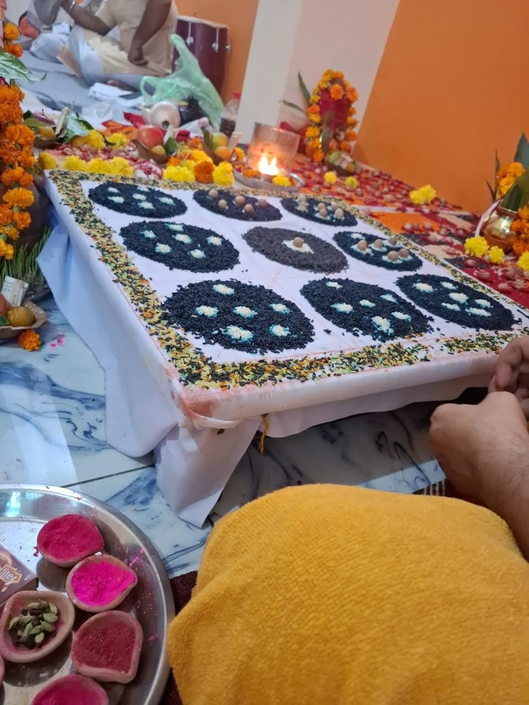
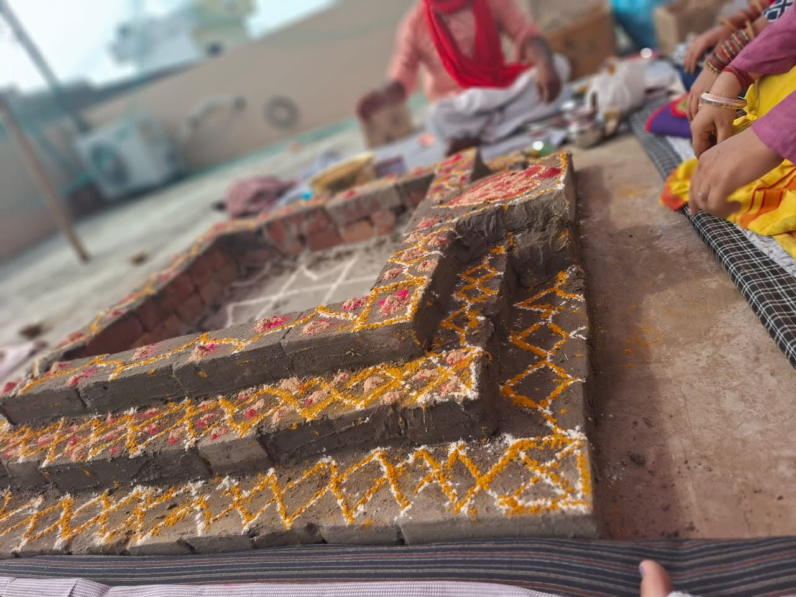
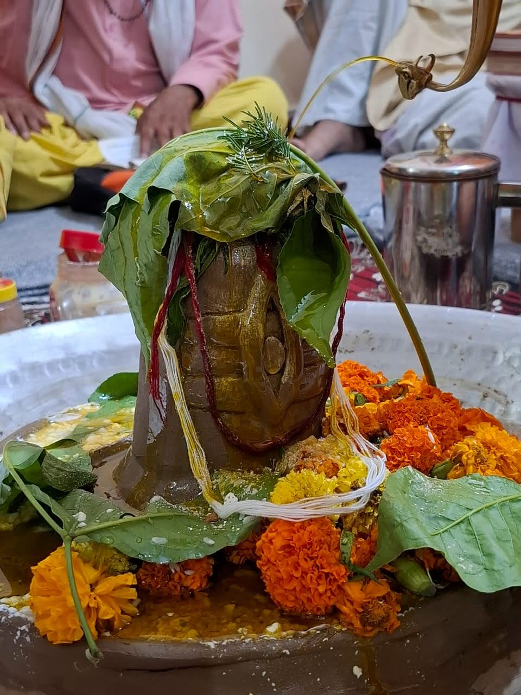
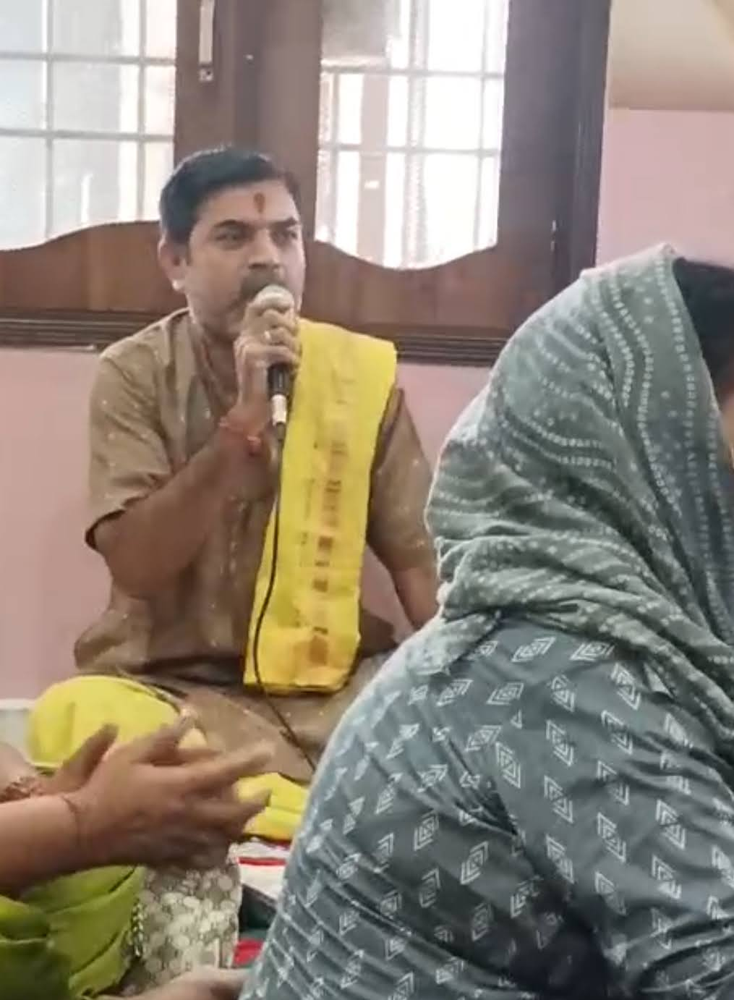
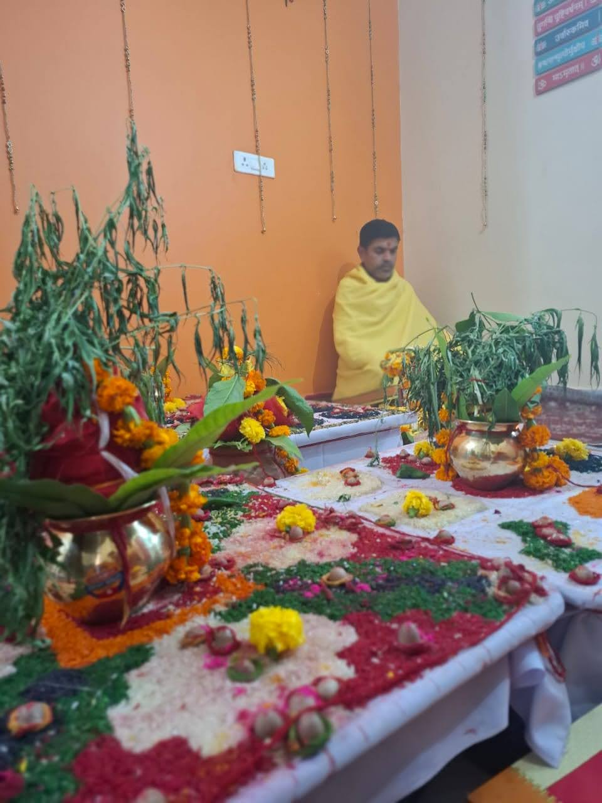

Pandit Puran Chand Dwivedi
Vedic Hindu Priest | 20+ Years Experience
About Me
Namaste 🙏 I am Pandit Puran Chand Dwivedi, a dedicated Vedic priest performing authentic Hindu rituals strictly as per Vedic Shastras. Services are available Online (Worldwide) and Offline (India).
Services
- Mahamrityunjaya Jaap
- Grah Shanti Puja
- Durga Saptashati & Chandi Path
- Narayan Bali & Pitra Dosh Puja
- Sunderkand & Ramayan
- Shraddh & Pind Daan
- Garud Puran & Kriya
- Vedic Vivah & Sanskar
- Birth Chart Reading & making
- Religious Consultancy
परिचय
नमस्ते 🙏 मैं पं. पूरन चंद द्विवेदी हूँ, एक अनुभवी वैदिक पुरोहित। मैं शास्त्रों के अनुसार पूजा-पाठ, हवन, जाप एवं संस्कार संपन्न कराता हूँ। सेवाएँ भारत एवं विदेशों में ऑनलाइन एवं ऑफलाइन उपलब्ध हैं।
सेवाएँ
- महामृत्युंजय जाप
- ग्रह शांति पूजा
- दुर्गा सप्तशती एवं चंडी पाठ
- नारायण बली एवं पितृ दोष पूजा
- सुंदरकांड एवं रामायण पाठ
- श्राद्ध एवं पिंडदान
- गरुड़ पुराण एवं क्रिया
- वैदिक विवाह एवं संस्कार
- जन्म कुंडली पढ़ना और बनाना
- धार्मिक परामर्श
Gallery




